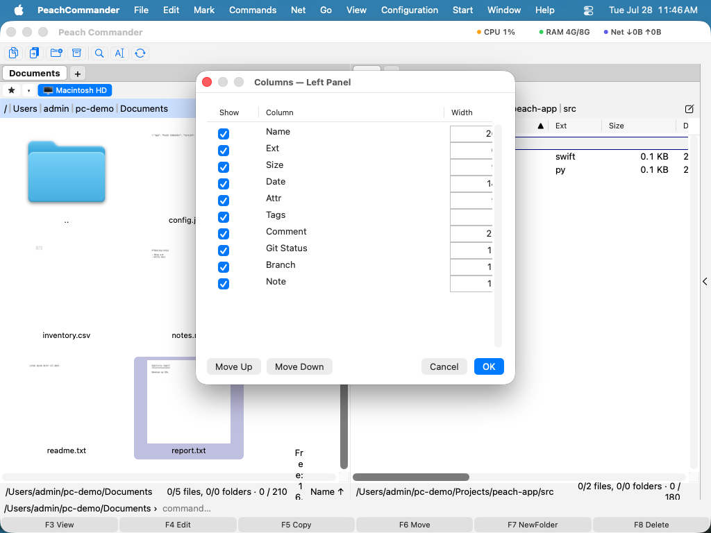

Режимы представления и сортировка
Каждая панель может показывать свою папку в раскладке, подходящей для задачи: подробный список с колонками, компактный многоколоночный список имён, сетка значков, галерея с крупными миниатюрами или дерево папок. Вы также можете сортировать список по имени, типу файла, размеру или дате, выбирать, какие именно колонки отображаются, и включать естественную (числовую) сортировку, чтобы имена с числами выстраивались так, как вы ожидаете. Режим представления, порядок сортировки и колонки задаются для каждой панели, поэтому две стороны могут выглядеть совершенно по-разному.
Смена режима представления
- Щёлкните по панели, которую хотите изменить, чтобы сделать её активной.
- Откройте меню Вид и выберите режим: Полный (Подробности) для списка с колонками, Краткий (Колонки) для плотного многоколоночного списка имён, Значки для сетки значков, Миниатюры (Галерея) для крупных предпросмотров или Дерево для дерева папок.
- Чтобы быстро перебирать режимы, не открывая меню, нажмите Cmd+Shift+M. Каждое нажатие переходит к следующему режиму.
 (Рисунок: та же папка, показанная как подробный список, краткий список колонок, сетка значков и галерея миниатюр.)
(Рисунок: та же папка, показанная как подробный список, краткий список колонок, сетка значков и галерея миниатюр.)
Сортировка списка файлов
- В представлении «Подробности» щёлкните по заголовку колонки (Имя, Тип, Размер или Дата), чтобы сортировать по ней. Небольшая стрелка в заголовке показывает текущую колонку и направление сортировки.
- Щёлкните по тому же заголовку ещё раз, чтобы обратить порядок.
- Вы также можете выбрать Вид > Сортировать по и выбрать Имя, Тип файла, Размер, Дата или Без сортировки.
Папки всегда сортируются вместе наверху, перед файлами, а запись .., поднимающая вас на уровень выше, закрепляется первой. Сортировка по имени или типу файла по умолчанию по возрастанию (от А до Я); сортировка по размеру или дате по умолчанию сначала новые или крупные.
Выбор отображаемых колонок
- Выберите Конфигурация > Колонки….
- Включайте или выключайте колонки и задавайте их порядок. Доступные колонки включают Имя, Тип, Размер, Дата, Атр (атрибуты), Метки и Комментарий.
- Примените изменения. Колонки влияют на представление «Подробности» активной панели.

(Рисунок: выберите, какие колонки отображаются в представлении «Подробности», и задайте их порядок.)Сочетания клавиш
| Действие | Сочетание |
|---|---|
| Перебрать режимы представления | Cmd+Shift+M |
| Краткое (колонки) представление | Ctrl+F1 |
| Полное (подробности) представление | Ctrl+F2 |
| Представление миниатюр (галерея) | Ctrl+Shift+F1 |
| Представление дерева | Ctrl+F8 |
| Сортировать по имени | Ctrl+F3 |
| Сортировать по типу файла | Ctrl+F4 |
| Сортировать по размеру | Ctrl+F5 |
| Сортировать по дате | Ctrl+F6 |
Советы
- Естественная (числовая) сортировка включена по умолчанию, поэтому
file2идёт передfile10, а не после. Вы можете отключить её в Конфигурация > Настройки в параметрах отображения. - Вы можете сделать колонку шире или уже в представлении «Подробности», перетаскивая разделительную линию между заголовками колонок.
- Если вы пользуетесь навигацией с клавиатуры в macOS (Системные настройки ▸ Клавиатура), ряд Ctrl+F1 … Ctrl+F8 принадлежит системе — строка меню, Dock, панель инструментов — и до Peach Commander не доходит. Переключите схему клавиш на macOS в настройках: режимы отображения окажутся на Cmd+1, Cmd+2 и Cmd+3, а сортировка на Alt+Cmd+1 … Alt+Cmd+4.
- Режим представления, порядок сортировки и выбор колонок запоминаются для каждой панели, поэтому одна сторона может быть подробным списком, а другая — фотогалереей.